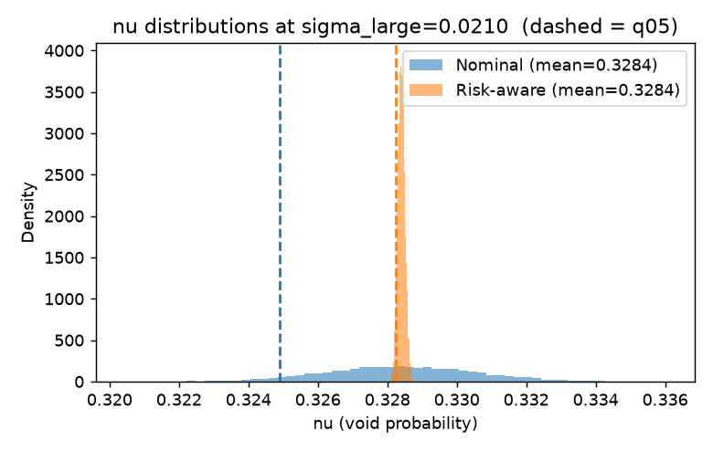
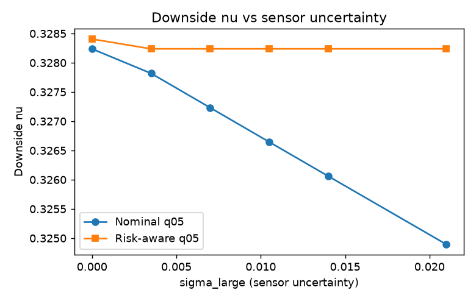

Research


Risk-Aware Sensor Placement
Independent research building on Kim et al. (IEEE SysCon 2025). Demonstrated that void probability is convex in sensor capability for multi-sensor placement, derived the Jensen gap to first order in capability variance, and verified the prediction in simulation. Formulated a risk-aware planner with a mean–standard-deviation objective; in simulation it holds 5th-percentile void probability flat under growing capability uncertainty while the nominal planner degrades.
- Python
- NumPy / SciPy
- Matplotlib
- Convex analysis
- Risk-aware planning